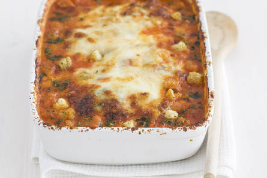

Kip parmezaan uit de oven!

Benodigdheden!
- 2 tenen knoflook
- 4 kipfilet
- 690 ml sugo tradizionale tomatensaus in pot
- 15 g verse basilicum (bakje)
- 250 g mozzarella
- 100 g Parmigiano Reggiano (geraspt)
- 40 g salade croutons knoflooksmaak (zakje)
Bereiden
- Verwarm de oven voor op 220 ºC.
- Pers de knoflook uit. Vet de bodem van de ovenschaal in met de olie en knoflook en bestrooi met peper. Leg de kipfilets in de schaal en schenk de tomatensaus erover. Zorg dat de kip helemaal bedekt is met de saus. Verdeel de fijngesneden basilicum erover. Verdeel de helft van de mozzarella en de helft van de Parmezaanse kaas over de saus. Verdeel de croutons en de rest van de mozzarella en Parmezaanse kaas.
- Bak de kip in ca. 45 min. in het midden van de oven gaar en goudbruin. Dek de schaal af met aluminiumfolie als de bovenkant te bruin wordt.